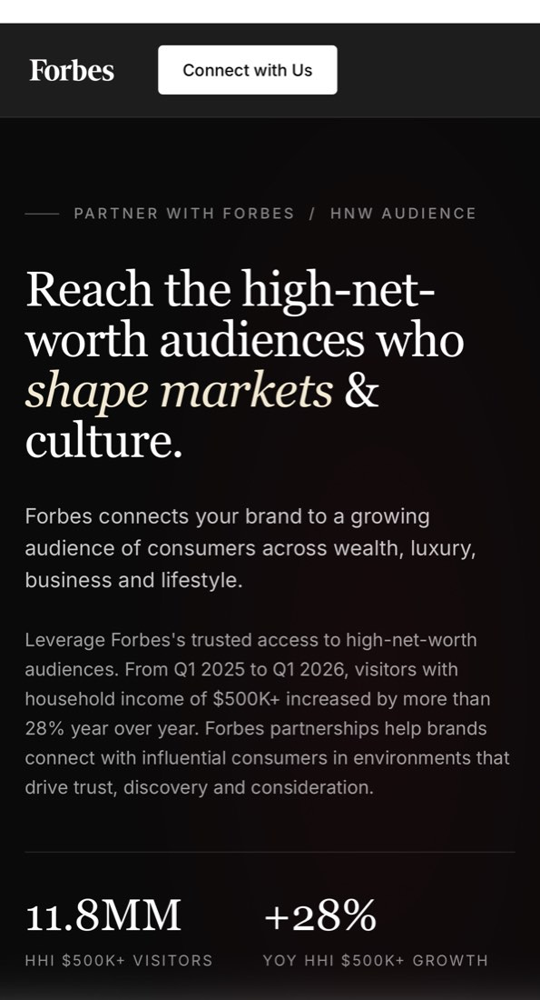

The demand engine
Built the B2B demand generation function from $0 to eight figures in marketing-influenced revenue, tracked through Salesforce contact-role attribution and conservatively counted.
Problem
Forbes made its money on audience and advertising. The B2B side needed real pipeline, and when I picked this up there was nothing behind it. No capture, no nurture, no routing. Nobody could say whether marketing had ever touched a dollar.
What I built
- Paid media, email, landing pages, nurture, funnel reporting. Built as one system from the start.
- Taught myself HTML and CSS because I got tired of waiting on the design queue. Shipped my own templates, landing pages, and tracking scripts.
- Contact-role attribution in Salesforce. Conservative on purpose, and it holds up when somebody pushes on it.
- Speed-to-lead standards and routing rules. Built those with sales, in the room.
- A one-click outreach library for sellers. They used it because it sat where they already worked.
- The Performance Console, plus the QBR and monthly reporting that tie campaign work to pipeline, accounts, and channel efficiency.
- And the bigger strategy piece: moving the business from monetizing pageviews to monetizing known people.
Stack
salesforce / pardot / blueconic / looker / ga4 / bigquery / linkedin ads / google ads / meta ads / gam
Outcome
Marketing-influenced revenue went from zero to eight figures. Influenced means a campaign touched a contact with a role on the closed opportunity in Salesforce. It's a conservative count, and it's a different claim than sourced or direct-booked.
Conversion improved about 2.5x over the same stretch, mostly from tightening capture, nurture, and routing.
